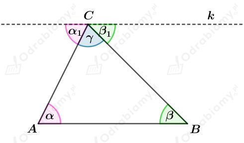

Uzasadnimy, 偶e suma miar kt贸w w dowolnym tr贸jkcie jest r贸wna 180o.
Rysunek:

Prosta k jest r贸wnolega do boku AB tego tr贸jkta.
Zauwa偶my, 偶e kty i1 s ktami naprzemianlegymi, zatem te kty s r贸wne.
Zauwa偶my, 偶e kty i 1 s ktami naprzemianlegymi, zatem te kty s r贸wne.
Wyznaczmy sum miar kt贸w tego tr贸jkta. Mamy:
ckd.
Uzasadnimy, 偶e dwusieczne dw贸ch ssiednich kt贸w r贸wnolegoboku przecinaj si pod ktem prostym.
Suma kt贸w przy wierzchokach A i B wynosi 180o. Mamy zatem:
Rozwa偶my tr贸jkt ABP. Wiedzc, 偶e suma miar kt贸w w tr贸jkcie wynosi 180o mamy:
A wic dwusieczne dw贸ch ssiednich kt贸w r贸wnolegoboku przecinaj si pod ktem prostym.
Uzasadnimy, 偶e jeli rodek okrgu opisanego na tr贸jkcie jest rodkiem jednego z tych bok贸w, to ten tr贸jkt jest prostoktny.
Rysunek:
Punkt O jest rodkiem okrgu opisanego na tr贸jkcie ABC. Zatem punkt O jest rodkiem boku AB.
Kt jest ktem wpisanym opartym na tym samym uku co kt rodkowy AOB.
Wyznaczmy miar kta. Mamy:
Uzasadnilimy, 偶e podany tr贸jkt jest tr贸jktem prostoktnym.
a)
Rysunek:
Z treci zadania wiemy, 偶e:
rodkowa AD i A1D1 podzielia bok CB i C1B1 na dwie r贸wne czci. Std:
Zatem tr贸jkty ABD i A1B1D1 s przystajce na mocy cechy BBB. Odpowiednie kty maj r贸wne miary, zatem:
oraz r贸wnie偶 mamy:
Na podstawie cechy przystawania BKB tr贸jkty ADC i A1D1C1 s przystajce. Czyli:
b)
Rysunek:
Z treci zadania wiemy, 偶e
Zatem r贸wnie偶
Na mocy cechy przystawania KBK tr贸jkty ADC i A1D1C1 s przystajce, zatem:
rodkowa AD i A1D1 podzielia bok CB i C1B1 na dwie r贸wne czci. Std:
Na mocy cechy przystawania BKB tr贸jkty ABC i A1B1C1 s przystajce, zatem: